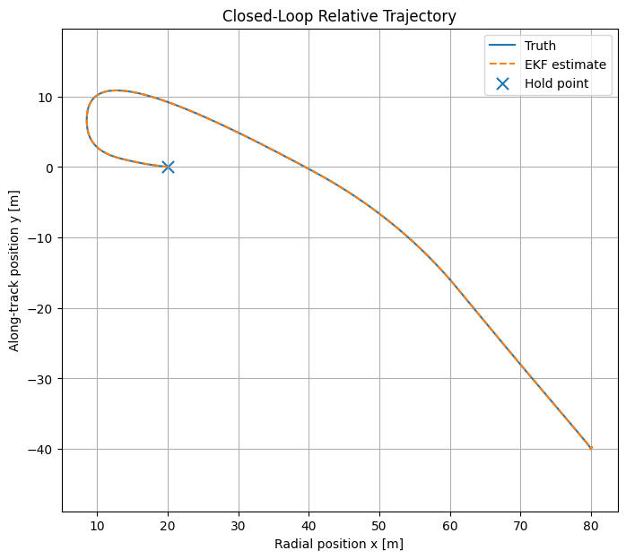
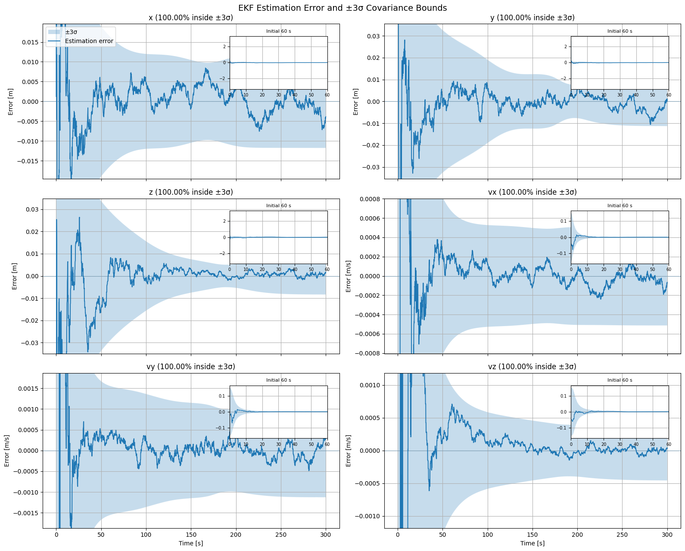
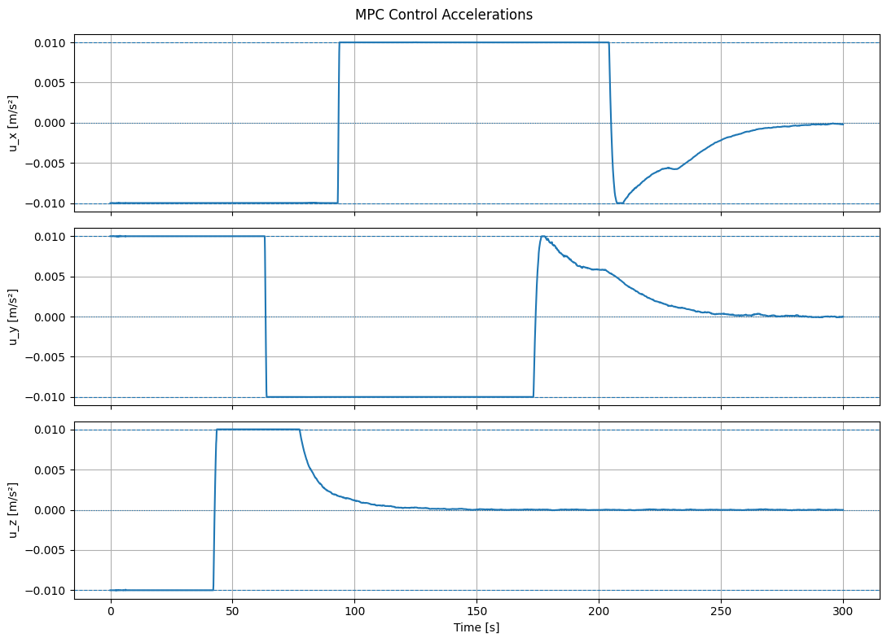

GNC · ESTIMATION · CONTROL
Spacecraft Relative Navigation & Rendezvous
Closed-loop relative navigation and control using range and camera measurements, an Extended Kalman Filter, and Model Predictive Control.
Problem
Navigate and control a deputy spacecraft relative to a chief using noisy relative measurements rather than perfect knowledge of the state. The deputy begins tens of meters away and is commanded to a 20 m hold point.
My role
Built the Python simulation, sensor models, EKF, MPC controller, nonlinear truth propagation, and performance visualizations.
Workflow
Architecture
The truth model propagates the chief and deputy with nonlinear two-body dynamics in ECI. Relative measurements are generated from range and camera-derived azimuth/elevation, then fused with an Extended Kalman Filter. The controller uses a linear HCW prediction model inside a constrained Model Predictive Controller to drive the deputy toward a 20 m hold point.
Selected results



Outcome
Integrated nonlinear relative-motion truth dynamics, simulated sensors, state estimation, and constrained predictive control into a complete rendezvous GNC loop.